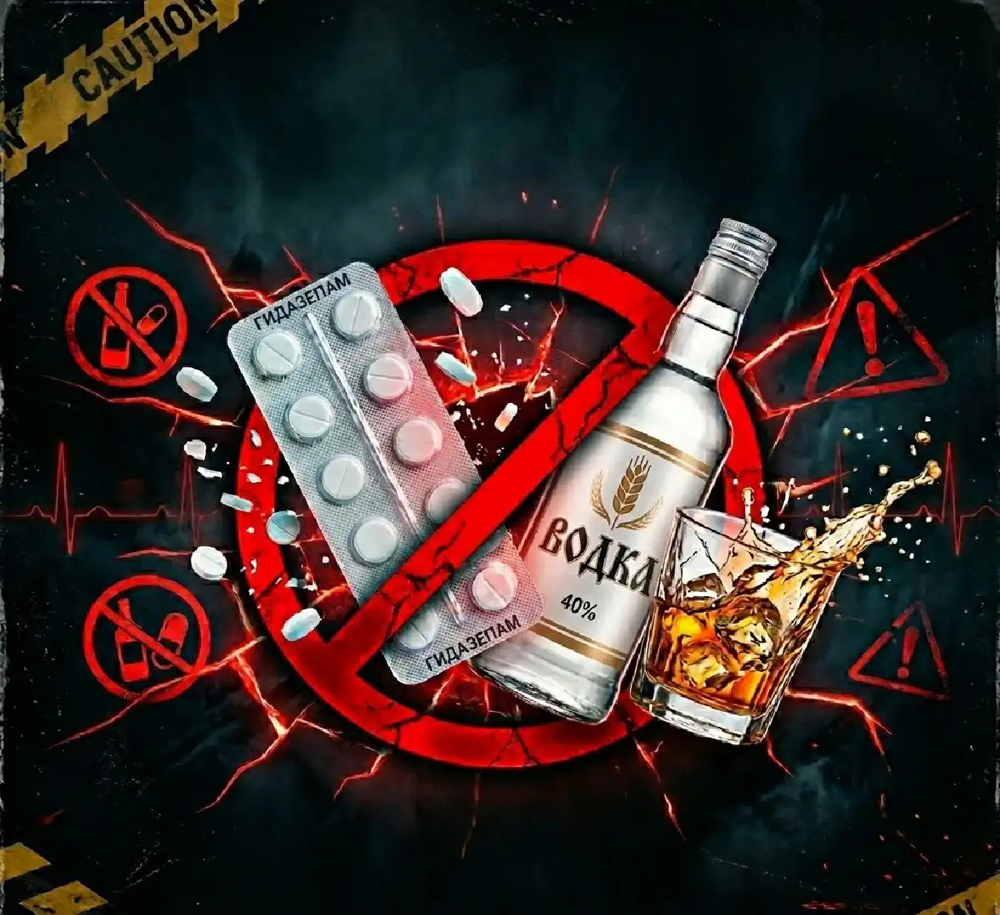

+38(068) 79 72 782
+38(068) 79 72 782Гидазепам и алкоголь: почему это опасное сочетание
Таблетка + спиртное = непредсказуемые последствия


Бесплатная консультация, работаем круглосуточно 24/7
Таблетка + спиртное = непредсказуемые последствия
Гидазепам — это анксиолитик из группы бензодиазепинов, который применяется для снижения тревожности, напряжения, раздражительности и нормализации сна. Он воздействует на рецепторы гамма-аминомасляной кислоты (ГАМК) в центральной нервной системе, усиливая тормозные процессы в мозге. Благодаря этому уменьшается внутреннее напряжение, снижается уровень тревоги, улучшается засыпание и общее эмоциональное состояние.
Алкоголь — депрессант центральной нервной системы. Он также влияет на ГАМК-рецепторы и одновременно подавляет активность других нейромедиаторных систем, отвечающих за бодрствование и контроль поведения. Когда эти два вещества сочетаются, их эффекты не просто складываются, а усиливают друг друга, создавая выраженное угнетение центральной нервной системы.
На первый взгляд может казаться, что алкоголь «усиливает успокоение», а гидазепам «помогает легче перенести похмелье» или стресс после употребления. Однако на практике такое сочетание повышает риск угнетения дыхания, резкого падения давления, выраженной слабости, нарушений координации и даже потери сознания. Алкоголь нарушает работу печени — органа, который отвечает за метаболизм большинства лекарственных препаратов, включая гидазепам. Это делает концентрацию препарата в крови менее предсказуемой: даже привычная доза может подействовать сильнее, чем ожидалось. В результате повышается риск побочных эффектов, чрезмерной седации и нарушений сознания.
Кроме того, сочетание алкоголя и бензодиазепинов увеличивает вероятность формирования зависимости. Оба вещества воздействуют на систему вознаграждения мозга, и при регулярном комбинированном употреблении формируется не только психологическая, но и физическая зависимость. Это значительно усложняет лечение и повышает риск абстинентных расстройств. С медицинской точки зрения это сочетание относится к потенциально опасным и требует особой осторожности. В клинической практике врачи настоятельно рекомендуют полностью исключать алкоголь во время приёма гидазепама. При появлении тревоги, бессонницы или симптомов похмелья безопаснее обратиться за консультацией специалиста, чем пытаться самостоятельно комбинировать препараты и спиртное.
Алкоголь влияет на метаболизм гидазепама в печени и усиливает его седативный эффект. Печень отвечает за переработку как этанола, так и лекарственных препаратов. Когда оба вещества присутствуют в организме одновременно, нагрузка на ферментные системы возрастает, а процесс выведения замедляется или становится нестабильным. В результате:
Кроме того, алкоголь нарушает предсказуемость действия препарата. Даже привычная дозировка гидазепама может вызвать чрезмерную слабость, головокружение, шаткость походки или спутанность сознания. Особенно опасна ситуация, когда человек принимает гидазепам «по самочувствию» после употребления алкоголя. В состоянии тревоги или дискомфорта может показаться, что таблетка «не подействовала», и человек принимает дополнительную дозу. Однако на фоне замедленного метаболизма концентрация препарата в крови может нарастать постепенно, что повышает риск выраженного угнетения центральной нервной системы спустя несколько часов.
У людей с хроническим употреблением алкоголя действие препарата может быть непредсказуемым: в одних случаях развивается чрезмерная седация, в других — парадоксальная реакция в виде раздражительности или возбуждения. Именно поэтому сочетание гидазепама и алкоголя рассматривается как клинически небезопасное. Даже если ранее препарат переносился хорошо, на фоне алкоголя его действие может существенно измениться.
После употребления алкоголя организм находится в состоянии интоксикации и физиологического стресса. Даже если субъективно человек ощущает расслабление, на уровне биохимии активируются стрессовые механизмы: повышается уровень адреналина и норадреналина, учащается пульс, усиливается нагрузка на миокард, возможны скачки артериального давления. Нарушается водно-электролитный баланс, кровь становится более вязкой, возрастает нагрузка на сосуды. Кроме того, алкоголь может вызывать спазм сосудов после кратковременного расширения, что делает показатели давления нестабильными. Утром после употребления нередко наблюдаются тахикардия, ощущение перебоев в работе сердца, головная боль, слабость и тревожность — всё это признаки перегрузки сердечно-сосудистой системы. Если в этот период принять гидазепам:
Гидазепам обладает анксиолитическим и умеренным миорелаксирующим эффектом, что само по себе может способствовать снижению артериального давления. В сочетании с остаточным действием алкоголя это создаёт дополнительную нагрузку на регуляторные механизмы организма. У людей с гипертонией, аритмией, ишемической болезнью сердца или другими сердечно-сосудистыми заболеваниями такие колебания могут быть особенно опасными. Резкие перепады давления повышают риск ухудшения кровоснабжения мозга и сердечной мышцы, могут провоцировать приступы аритмии и ухудшение общего состояния. Особую осторожность следует проявлять пожилым пациентам и людям с хроническими заболеваниями, так как их компенсаторные механизмы работают менее эффективно. В таких случаях самолечение анксиолитиками после алкоголя может привести к непредсказуемым последствиям.
Оба вещества угнетают центральную нервную систему, воздействуя на одни и те же нейромедиаторные механизмы. Гидазепам усиливает тормозное влияние ГАМК в головном мозге, а алкоголь дополнительно подавляет активность нейронов и снижает скорость передачи импульсов. В результате возникает двойной седативный эффект, который может быть значительно сильнее, чем ожидается.
Человек может недооценивать тяжесть своего состояния, так как алкоголь снижает критичность мышления. При этом окружающим становится заметна выраженная заторможенность, неадекватность реакции и трудности с поддержанием равновесия. Особую опасность представляет угнетение дыхания. Бензодиазепины сами по себе редко вызывают тяжелое подавление дыхательного центра при соблюдении терапевтических дозировок, однако в сочетании с алкоголем риск существенно возрастает. Замедление дыхания может быть постепенным и нарастать в течение нескольких часов. В тяжелых случаях возможно угнетение дыхательного центра, что требует срочной медицинской помощи. Такие состояния потенциально угрожают жизни и требуют немедленного обращения за медицинской помощью. Именно поэтому сочетание гидазепама и алкоголя рассматривается как небезопасное, особенно при самостоятельном приёме без врачебного контроля.
После алкоголя нередко появляются тревожность, раздражительность, панические ощущения, внутреннее напряжение и бессонница. Это связано с тем, что после кратковременного угнетающего действия спиртного активируется симпатическая нервная система — повышается уровень стресс-гормонов, учащается пульс, усиливается чувство тревоги. Такое состояние часто называют «алкогольной тревогой» или абстинентной реакцией.
Многие пытаются «снять» эти симптомы гидазепамом, рассчитывая на его успокаивающий эффект. Действительно, препарат может временно уменьшить тревожность, однако он не устраняет причину состояния — интоксикацию и метаболические нарушения, вызванные алкоголем. При похмелье организм обезвожен, нарушен электролитный баланс (калий, магний, натрий), повышена нагрузка на сердце и печень, изменён сосудистый тонус. Кроме того, человек в состоянии похмелья может неправильно оценить своё состояние и принять повторную дозу препарата, если эффект кажется «недостаточным». Это повышает риск чрезмерной седации и осложнений.
Важно понимать: тревога после алкоголя — это сигнал о нарушении баланса в организме. Без коррекции обезвоживания, электролитных нарушений и общей интоксикации приём гидазепама не решает проблему, а лишь временно маскирует симптомы.
Похмелье — это не просто дискомфорт, а проявление интоксикации организма продуктами распада этанола. В этот период нарушается работа нервной системы, сердца, сосудов, печени и почек. Повышается уровень стресс-гормонов, учащается пульс, возможны скачки давления, появляются тревожность, слабость, тошнота, бессонница.
Попытки «перетерпеть» состояние или заглушить симптомы анксиолитиками не устраняют саму причину — токсическую нагрузку и метаболические нарушения. Вместо самолечения анксиолитиками безопаснее провести контролируемую детоксикацию под медицинским наблюдением. Подбор препаратов и объёма инфузии осуществляется индивидуально — с учётом возраста, состояния здоровья, наличия хронических заболеваний и выраженности симптомов.
Это особенно важно при тахикардии, нестабильном давлении, выраженной слабости или длительном употреблении алкоголя. При необходимости можно обратиться к наркологам UmbrellaPlus для безопасной детоксикации от алкоголя на дому в городах: (Киев | Харьков | Одесса | Днепр | Львов | Запорожье | Черкассы) . Выезд врача позволяет объективно оценить состояние пациента, исключить риски и провести терапию в комфортных домашних условиях. Такой подход снижает вероятность осложнений, помогает быстрее восстановить самочувствие и исключает опасные попытки самолечения.
Точного универсального интервала между употреблением алкоголя и приёмом гидазепама не существует, так как скорость выведения этанола зависит от дозы, массы тела, пола, состояния печени, скорости обмена веществ и общего здоровья человека. У разных людей метаболизм алкоголя может значительно отличаться, поэтому ориентироваться только на субъективное «самочувствие» небезопасно.
В среднем организму требуется не менее 24 часов для частичного выведения этанола, однако при запое, больших дозах спиртного или хроническом употреблении этот период значительно увеличивается. Следы алкоголя и его метаболитов могут сохраняться в организме дольше, а функциональные нарушения — обезвоживание, скачки давления, тахикардия — могут сохраняться даже после снижения концентрации этанола в крови.
Кроме того, важно учитывать не только факт наличия алкоголя, но и общее состояние организма. Если сохраняются такие симптомы, как слабость, учащённый пульс, нестабильное давление, головная боль, тревожность или бессонница, это говорит о продолжающемся стрессовом воздействии на нервную и сердечно-сосудистую систему. В этот период приём анксиолитика без медицинской оценки может быть небезопасным. Принимать гидазепам можно только после полной оценки состояния и при отсутствии признаков интоксикации.
Во время запоя организм находится в состоянии выраженной интоксикации и перегрузки нервной системы. Алкоголь нарушает баланс нейромедиаторов, влияет на сосудистый тонус, работу сердца, печени и головного мозга. На фоне отмены спиртного часто появляются тревога, бессонница, тахикардия, раздражительность, внутреннее напряжение. В такой ситуации некоторые люди принимают гидазепам самостоятельно, рассчитывая снизить тревожность и быстрее стабилизировать состояние. Однако такой подход может быть небезопасным и не решает основную проблему — токсическое воздействие алкоголя. Самостоятельное применение гидазепама на фоне запоя:
Кроме того, при запое печень уже работает с перегрузкой, перерабатывая этанол. Дополнительная медикаментозная нагрузка может сделать действие препарата менее предсказуемым: даже привычная доза способна вызвать чрезмерную седацию или резкую слабость. Важно учитывать, что тревога при абстиненции — это не изолированный симптом, а часть общего синдрома. Если ограничиться только приёмом анксиолитика, причина состояния остаётся без коррекции. Лечение должно быть комплексным и проводиться под медицинским контролем. Оно включает оценку тяжести состояния, при необходимости — детоксикацию, восстановление водно-электролитного баланса, контроль давления и пульса, а также индивидуальный подбор препаратов.
Алкоголь способен провоцировать панические атаки и усиливать тревожные расстройства. После периода расслабления наступает фаза так называемого «отката» — активируется симпатическая нервная система, повышается уровень адреналина, учащается пульс, появляется внутреннее напряжение и ощущение угрозы. На этом фоне могут возникать приступы паники с ощущением нехватки воздуха, дрожью, потливостью и страхом потери контроля.
У людей с уже существующим тревожным расстройством алкоголь нередко усугубляет течение заболевания. Регулярное употребление нарушает сон, снижает устойчивость к стрессу и делает нервную систему более чувствительной к перегрузкам. Особую опасность представляет повторяющееся использование анксиолитика «по ситуации» после употребления спиртного. Со временем формируется психологическая зависимость от схемы «алкоголь — тревога — таблетка», что усложняет лечение и повышает риск хронических тревожных нарушений. При повторяющихся панических эпизодах необходима диагностика и индивидуальная схема лечения. Важно оценить состояние нервной и сердечно-сосудистой системы, исключить соматические причины симптомов и подобрать безопасную терапию.
Алкоголь может значительно усилить такие побочные эффекты гидазепама, как:
Оба вещества воздействуют на центральную нервную систему и усиливают тормозные процессы в головном мозге. В результате даже терапевтическая доза гидазепама на фоне алкоголя может действовать значительно сильнее, чем ожидалось. Человек может испытывать выраженную слабость, трудности с концентрацией, эпизоды кратковременной дезориентации или провалы в памяти. Кроме того, сочетание алкоголя и анксиолитика снижает критичность мышления. Человек может не осознавать степень своего ухудшения, переоценивать свои возможности и принимать рискованные решения. Это повышает вероятность бытовых травм, падений и других несчастных случаев.
Это особенно опасно для людей, работающих с техникой, механизмами или управляющих транспортом. Замедленная реакция, ухудшение внимания и координации могут привести к ошибкам, которые создают угрозу не только для самого человека, но и для окружающих. Даже если самочувствие субъективно кажется «нормальным», объективные психомоторные показатели могут быть снижены. Именно поэтому во время приёма гидазепама рекомендуется полностью исключить алкоголь и избегать деятельности, требующей высокой концентрации и быстрой реакции.
Даже без алкоголя гидазепам может замедлять реакции, снижать скорость обработки информации и уменьшать концентрацию внимания. Это связано с его седативным и анксиолитическим действием на центральную нервную систему. В сочетании со спиртным риск возрастает в несколько раз. Алкоголь дополнительно угнетает ЦНС, нарушает координацию и снижает критичность мышления. В результате даже небольшое количество спиртного на фоне приёма препарата может значительно ухудшить психомоторные функции. Возможны:
Опасность заключается в том, что человек может не ощущать выраженного опьянения, но объективно его реакции уже будут замедлены. Сочетание гидазепама и алкоголя увеличивает тормозной эффект, что делает управление транспортом крайне рискованным. Такое сочетание представляет угрозу не только для водителя, но и для окружающих.
Нарушение сна после алкоголя — частая проблема. Несмотря на то что спиртное может вызывать ощущение сонливости, структура сна при этом существенно нарушается: уменьшается фаза глубокого сна, сон становится поверхностным, появляются частые пробуждения, ранние подъёмы и ощущение разбитости утром.
На следующий день после употребления алкоголя нервная система находится в состоянии перевозбуждения. Повышается уровень стресс-гормонов, учащается пульс, усиливается тревожность — всё это мешает полноценному засыпанию. Кроме того, при остаточном действии алкоголя эффект препарата может быть непредсказуемым. Даже стандартная доза способна вызвать чрезмерную сонливость или, наоборот, не дать ожидаемого эффекта, что провоцирует повторный приём. Гораздо безопаснее стабилизировать состояние организма и устранить последствия интоксикации. Восстановление водного баланса, нормализация давления и пульса, поддержка нервной системы под медицинским контролем помогают естественным образом улучшить сон без риска осложнений и формирования зависимости.
При тревожности после алкоголя важно понимать, что это состояние чаще всего связано с абстинентной реакцией и перегрузкой нервной системы. Организм восстанавливается после токсического воздействия этанола, и в этот период особенно важно не усугублять ситуацию неправильными действиями. При тревожности после алкоголя важно:
Повторный приём алкоголя может временно уменьшить тревожность, но впоследствии усиливает абстинентные проявления и повышает риск формирования запойного цикла. Если тревога сопровождается тахикардией, скачками давления, выраженной слабостью, дрожью или бессонницей — требуется медицинская оценка состояния. Такие симптомы могут указывать на значительную нагрузку на сердечно-сосудистую систему или развитие абстинентного синдрома.
Самостоятельное сочетание гидазепама и алкоголя может привести к осложнениям со стороны нервной и сердечно-сосудистой системы. Усиленное угнетение центральной нервной системы, перепады артериального давления, тахикардия, выраженная сонливость, нарушение координации — всё это повышает риск травм, обмороков и ухудшения общего состояния.
Особую опасность представляет непредсказуемость реакции организма. Даже если ранее препарат переносился хорошо, на фоне алкоголя его действие может существенно измениться. Возрастает вероятность чрезмерной седации, снижения дыхательной активности, ухудшения памяти и концентрации внимания. У людей с гипертонией, аритмией и другими сердечно-сосудистыми заболеваниями такие колебания могут протекать тяжелее и повышать риск осложнений.
Важно помнить: самостоятельное лечение опасно для вашего здоровья. Попытки «снять тревогу» таблеткой после алкоголя или комбинировать препараты без консультации врача могут привести к ухудшению состояния и непредсказуемым последствиям. В наркологии UmbrellaPlus можно получить консультацию специалиста, пройти безопасную детоксикацию и получить рекомендации по дальнейшему лечению. Врач оценит общее состояние, при необходимости проведёт детоксикацию, поможет стабилизировать давление и пульс, снизить тревожность и восстановить сон без риска осложнений. Самолечение при тревоге, похмелье или запое опасно для здоровья. Обращение к врачу позволяет избежать осложнений, стабилизировать состояние и выбрать безопасную стратегию восстановления.
Телефон для консультации врача: +38(050-021-69-57)
Да, мы строго соблюдаем полную конфиденциальность на всех этапах лечения. Информация о пациенте, диагнозе и прохождении терапии не передаётся третьим лицам. Обращение к нам не влечёт постановку на учёт. Вы можете быть уверены в безопасности и анонимности.
Программа лечения разрабатывается индивидуально после консультации со специалистом. Учитываются вид зависимости, её длительность, физическое и психологическое состояние пациента. Такой подход позволяет повысить эффективность терапии и снизить риск срыва. Мы не используем шаблонные решения.
Да, мы сопровождаем пациентов и после основного курса лечения. Проводятся консультации, рекомендации по адаптации и профилактике рецидивов. При необходимости возможна дальнейшая психологическая поддержка. Это помогает сохранить результат и вернуться к полноценной жизни.
Номер телефона:
+380 (68) 797 27 82
+380 (50) 021 69 57
Адрес наркологического центра вашего города уточняйте по
телефону
Работаем в: Киеве, Одессе, Львове, Харькове, Днепре,
Запорожье, Черкассах, Чугуеве, Черноморске, Каменском
Telegram: t.me/umbrellaplus
График работы: Круглосуточно